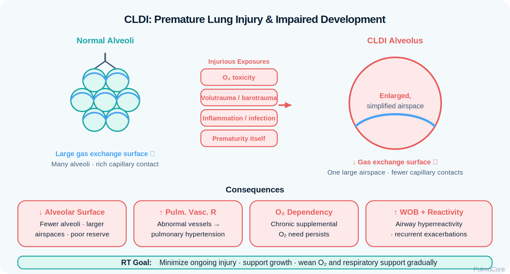
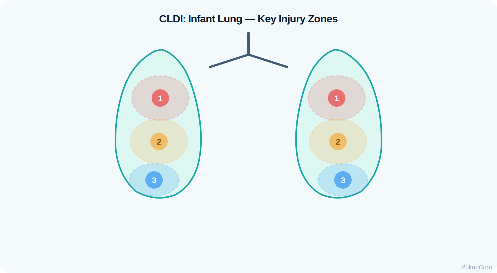

Chronic lung disease of infancy, often called bronchopulmonary dysplasia, is a chronic respiratory disorder most often seen in premature infants who required prolonged oxygen, positive pressure, or mechanical ventilation. This module focuses on RT-level recognition, gas exchange support, ventilator strategy, oxygen safety, nutrition-growth connections, and escalation when respiratory reserve is limited.
Category Neonatal / Pediatric Lung Disease
Estimated Time 30–40 minutes
Level Core RT Knowledge
Learning Objectives
By the end of this module, learners should connect prematurity, lung injury, impaired alveolar development, oxygen need, ventilatory support, clinical assessment, and safe escalation in infants with chronic lung disease.
1. Explain pathophysiology Describe how prematurity, inflammation, oxygen exposure, and positive pressure can disrupt alveolar and vascular development.
2. Interpret clinical data Use SpO₂ trend, FiO₂ need, work of breathing, blood gases, imaging, growth, and feeding tolerance to assess status.
3. Manage support safely Apply oxygen, CPAP, noninvasive support, ventilator concepts, humidification, and weaning logic while minimizing injury.
Watch this quick overview before moving into the disease snapshot.
Disease Snapshot
Chronic lung disease of infancy develops when immature lungs are exposed to injury during a critical period of growth. The result is reduced pulmonary reserve, abnormal alveolar development, increased work of breathing, and prolonged need for oxygen or respiratory support.
What it is: Chronic respiratory disease of prematurity with persistent oxygen or support needs.
Primary problem: Immature lungs plus inflammation, oxygen exposure, and pressure or volume injury.
RT priority: Balance adequate oxygenation with lung-protective support and careful monitoring.
RT Clinical Connection
For RTs, chronic lung disease of infancy is a reserve problem. These infants may look stable at baseline but deteriorate quickly with feeding fatigue, viral infection, airway obstruction, pulmonary hypertension, or excessive ventilatory demand.
Board Prep Frame
Immediately connect chronic lung disease of infancy with prematurity, prolonged oxygen or ventilator exposure, impaired alveolar development, persistent oxygen need, careful saturation targeting, pulmonary hypertension risk, and slow support weaning.
Quick Pre-Check
Start with the core CLDI pattern
Which statement best describes chronic lung disease of infancy?
Anatomy & Pathophysiology
CLDI occurs when immature lungs are injured before normal alveolar and vascular development is complete. Inflammation, oxygen exposure, ventilator pressure, infection, fluid overload, and poor growth can all worsen the disease process.

Prematurity → immature alveoli and capillaries → oxygen/pressure/inflammation exposure → disrupted alveolarization + vascular remodeling → decreased reserve → chronic oxygen need, tachypnea, retractions, feeding fatigue, and pulmonary hypertension risk.
What Changes in CLDI
Change
What Happens
Why It Matters
Impaired alveolar growth
Fewer and larger simplified alveoli may develop.
Less surface area for gas exchange.
Inflammation
Airways and lung tissue remain irritated.
Increases oxygen need and work of breathing.
Vascular remodeling
Pulmonary vessels may develop abnormally.
Raises pulmonary hypertension risk.
Airway reactivity
Small airways may narrow or obstruct.
Can cause wheeze, air trapping, and episodic deterioration.
Poor respiratory reserve
Infant has limited ability to tolerate stress.
Feeding, infection, or agitation may cause desaturation.
Danger Sign
An infant with CLDI who has increasing oxygen requirement, apnea/bradycardia, rising PaCO₂, poor feeding, or worsening retractions needs urgent reassessment.
Click the CLDI Hotspots
Click each hotspot to reveal how that mechanism contributes to chronic lung disease of infancy.

Start here: Click all four hotspots to complete this activity.
0 / 4 hotspots reviewed
Etiology, Triggers & Risk Factors
Chronic Lung Disease of Infancy symptoms often occur after exposure to triggers that irritate or inflame hyperresponsive airways. Triggers vary by patient and may include allergens, exercise, cold air, respiratory infection, smoke, occupational exposures, strong odors, stress, and medication sensitivity.
Trigger or Risk Factor
Why It Matters
Teaching Focus
Allergens
Can activate inflammatory pathways.
Identify and reduce exposure when possible.
Exercise
Can trigger small airway reactivity in susceptible patients.
Plan pretreatment/action plan when ordered.
Cold air
Can irritate hyperresponsive airways.
Use avoidance and protection strategies.
Viral infection
Common exacerbation trigger.
Monitor worsening symptoms and rescue use.
Smoke/strong odors
Direct airway irritants.
Remove exposure and educate.
Aspirin/NSAID sensitivity
Can worsen symptoms in sensitive patients.
Review medication history.
Sort the Chronic Lung Disease of Infancy Factors
Choose the best category for each item, then check your answers.
Cat dander exposure
Inhaled corticosteroid
Cold air
Silent chest
Daily anti-inflammatory control plan
Complete the sorting activity to continue.
Clinical Manifestations
Chronic Lung Disease of Infancy presentation ranges from mild cough or increased work of breathing to severe respiratory distress. RT assessment should focus on air movement, work of breathing, oxygenation, ventilation, speech pattern, mental status, and response to treatment.
Anxiety, tripod position, accessory muscle use, inability to speak full sentences.
Breath sounds
Tachypnea and Retractions, diminished breath sounds, prolonged expiratory phase, silent chest in severe obstruction.
Oxygenation clues
Low SpO₂, low PaO₂, cyanosis in severe cases.
Ventilation clues
Low PaCO₂ early; normalizing/rising PaCO₂ as fatigue develops.
Response clues
Improvement in WOB, air movement, oxygen support, and symptoms after respiratory support therapy.
Important Teaching Point
A severe chronic lung disease of infancy patient who becomes drowsy, quiet, or less responsive is more concerning than a patient who is loudly tachypnea and retractions but still moving air. Quiet can mean failure.
Sort the CLDI Clinical Signs
Categorize each finding as an Early/Mild Sign, Worsening Sign, or Danger Sign, then check your answers.
Tachypnea with mild accessory muscle use
Drowsy or less responsive despite distress
Rising PaCO₂ with persistent severe distress
Low SpO₂ improving with supplemental oxygen
Silent chest with minimal air movement
Complete the sorting activity to continue.
Diagnostics & Assessment
Diagnostic data helps confirm reversible obstruction, monitor exacerbation severity, identify poor response, and rule out alternate causes of dyspnea.
Spirometry and PFTs
Finding
Chronic Lung Disease of Infancy Pattern
FEV₁
Decreased during obstruction; improves with respiratory support when reversible.
FVC
Normal or decreased during air trapping.
FEV₁/FVC
Decreased during obstruction.
Respiratory Support response
Significant improvement supports chronic lung disease of infancy.
Peak expiratory flow
Useful for monitoring severity and action plan zones.
ABG Patterns
Pattern
Meaning
Low PaCO₂ with respiratory distress
Often early hyperventilation.
Normal PaCO₂ despite severe distress
Concerning because PaCO₂ may be rising from prior low level.
High PaCO₂ with fatigue or altered mental status
Possible ventilatory failure.
Low PaO₂
Hypoxemia from V/Q mismatch or severe obstruction.
Chest X-ray
Chest x-ray may show hyperinflation during an exacerbation, but it is also useful for ruling out pneumonia, pneumothorax, or other causes of respiratory distress.
Severity Classification & Oxygen Support Zones
Chronic Lung Disease of Infancy severity considers symptom frequency, nighttime awakenings, rescue medication use, activity limitation, lung function, and exacerbation history. Peak flow zones help translate the patient’s personal best into action levels.
Severity Category
Typical Pattern
Intermittent
Symptoms ≤2 days/week; nighttime symptoms ≤2 times/month; normal lung function between episodes.
Mild persistent
Symptoms >2 days/week but not daily; minor limitation may occur.
Moderate persistent
Daily symptoms; nighttime symptoms more than once per week; some activity limitation.
Severe persistent
Symptoms throughout the day; frequent nighttime symptoms; extreme activity limitation.
Green Zone 80–100% of personal best. Chronic Lung Disease of Infancy is generally controlled.
Yellow Zone 50–79% of personal best. Symptoms are worsening; use the action plan.
Red Zone Below 50% of personal best. Medical alert; severe obstruction risk.
Oxygen Support Activity
A patient’s personal best oxygen support is 500 L/min. Today’s oxygen support is 225 L/min. Which zone is this?
Severity & Red Flags
The key question is not simply “Does this patient have chronic lung disease of infancy?” The key question is whether the patient is moving enough air to maintain ventilation.
Red Flag
Why It Matters
Silent chest or very poor air movement
May indicate severe obstruction and impending failure.
Rising PaCO₂ with distress
Suggests fatigue and worsening ventilation.
New confusion, drowsiness, or exhaustion
May indicate hypoxemia, hypercapnia, or respiratory muscle fatigue.
Inability to speak full sentences
Significant respiratory distress.
Peak flow below 50% personal best
Red zone; severe obstruction risk.
No improvement after initial respiratory support therapy
Treatment failure; reassess and escalate.
Management & Treatment
Chronic Lung Disease of Infancy management depends on whether the patient is stable, acutely symptomatic, or progressing toward respiratory failure. Rescue therapy treats acute small airway reactivity. Controller therapy treats chronic inflammation.
Medication Classes
Class
Example
Why It Helps
oxygen/flow support
oxygen and flow support
Rapid bronchodilation for acute symptoms.
anti-inflammatory/supportive therapy
Fluticasone, budesonide
Reduces chronic lung inflammation.
long-term respiratory support
Salmeterol, formoterol
Long-acting bronchodilation; used with anti-inflammatory/supportive therapy for chronic lung disease of infancy control, not alone.
Anticholinergic
support escalation
Added in moderate/severe acute exacerbations.
Systemic steroid
Prednisone, methylprednisolone
Reduces inflammation during significant exacerbation; not immediate bronchodilation.
Magnesium sulfate
IV magnesium
May be used for severe exacerbations with poor initial response.
Stepwise Control Concept
Increase therapy when chronic lung disease of infancy is uncontrolled, and step down only after sustained control. Long-term plans typically increase anti-inflammatory/controller support as symptom burden and exacerbation risk increase.
Acute Chronic Lung Disease of Infancy Treatment Sequence
Select the steps in the best general order for a moderate to severe chronic lung disease of infancy exacerbation.
Assess severity and oxygenation
Give oxygen as needed
Administer inhaled oxygen/flow support
Add support escalation for moderate/severe exacerbation
Give systemic corticosteroid
Escalate if poor response
Complete the sequence activity to continue.
Status Chronic Lung Disease of Infancyticus & Ventilator Considerations
Status chronic lung disease of infancyticus is a severe chronic lung disease of infancy exacerbation that does not respond adequately to standard initial treatment. These patients are at risk for respiratory failure.
Vent goal: Support ventilation while reducing dynamic hyperinflation and barotrauma risk.
Settings concept: Use enough expiratory time to reduce air trapping and auto-PEEP.
Board Pearl
In severe chronic lung disease of infancy requiring ventilation, avoid breath stacking. Concepts usually include lower respiratory rate, longer expiratory time, careful monitoring for auto-PEEP, and permissive hypercapnia when clinically appropriate and ordered.
Respiratory Therapist Role
The RT is central to chronic lung disease of infancy assessment, treatment delivery, monitoring, education, and escalation. The RT should assess respiratory rate and pattern, work of breathing, breath sounds, oxygen support, oxygen device/settings, SpO₂, mental status, triggers, baseline status, and response to therapy.
RT Task
What to Assess or Do
Why It Matters
Assess ventilation
RR, pattern, PaCO₂ trend, mental status, fatigue.
Detects impending ventilatory failure.
Assess oxygenation
SpO₂, PaO₂, cyanosis, oxygen need.
Identifies hypoxemia and response.
Evaluate breath sounds
Increased Work of Breathings, diminished sounds, silent chest.
Guides therapy and escalation.
Monitor response
Pre/post respiratory support symptoms, air movement, oxygen support.
This guided case reveals one clinical stage at a time. Learners make an RT decision, receive feedback, and then continue to the next stage.
Stage 1: Initial Presentation
A 19-year-old patient arrives with shortness of breath after exposure to a cat. They are anxious, tachypnea and retractions, and speaking in short phrases.
RR 32/min
SpO₂ 90% on room air
Breath Sounds Diffuse expiratory increased work of breathings
Decision Question: What is the priority first action?
Stage 2: After Initial Respiratory Support Therapy
After initial oxygen and flow support treatments, the patient remains dyspneic. Tachypnea and Retractions is still present, RR is 32/min, and accessory muscles are visible.
Decision Question: Which additional therapy is commonly added for moderate to severe exacerbation?
Stage 3: ABG Trend
The patient’s ABG initially shows pH 7.48, PaCO₂ 30 mm Hg, PaO₂ 64 mm Hg. Later, they become fatigued and PaCO₂ rises to 48 mm Hg.
Decision Question: How should the rising PaCO₂ be interpreted?
Stage 4: Ventilator Concept
The patient becomes drowsy. Breath sounds are very diminished. The team prepares for possible intubation and mechanical ventilation.
Decision Question: Which ventilator strategy concept is most important in severe chronic lung disease of infancy?
Case Wrap-Up
RT Takeaway: In severe chronic lung disease of infancy, improvement is measured by air movement, work of breathing, mental status, oxygen support/clinical response, and ABG trend — not tachypnea and retractions alone.
If the patient worsens: silent chest, drowsiness, rising PaCO₂, and falling pH suggest impending respiratory failure and need urgent escalation.
Knowledge Check
Board-Style Practice
Answer each question to complete this activity. Answer choices shuffle each time the lesson opens.
Question 1
A patient with chronic lung disease of infancy has tachypnea and retractions, dyspnea, and a decreased FEV₁/FVC ratio that improves significantly after respiratory support administration. What does this support?
Question 2
Which finding is most concerning in a severe chronic lung disease of infancy exacerbation?
Question 3
Which medication class is the foundation of long-term inflammation control in persistent chronic lung disease of infancy?
Question 4
In status chronic lung disease of infancyticus requiring ventilation, which approach helps reduce dynamic hyperinflation?
0 / 4 questions answered
FAQ
Common Chronic Lung Disease of Infancy Questions
What is the simplest way to understand chronic lung disease of infancy?
Chronic Lung Disease of Infancy is a chronic inflammatory airway disease where triggers can cause small airway reactivity, swelling, secretions, and reversible airflow obstruction.
How is chronic lung disease of infancy different from neonatal lung disease?
Chronic Lung Disease of Infancy is often episodic, trigger-driven, and more reversible. neonatal lung disease is usually progressive and less fully reversible.
Why is a rising PaCO₂ dangerous in chronic lung disease of infancy?
Early chronic lung disease of infancy often causes hyperventilation and low PaCO₂. If PaCO₂ normalizes or rises while distress continues, the patient may be fatiguing and failing to ventilate.
Does tachypnea and retractions always mean the patient is moving air well?
No. Tachypnea and Retractions requires airflow. A severe patient with very diminished or absent breath sounds may be worse than a loud increased work of breathingr.
What does oxygen support tell us?
Peak flow estimates how quickly the patient can exhale. It helps monitor severity and action plan zones compared with personal best.
Why not use long-term respiratory support alone for chronic lung disease of infancy?
long-term respiratory support should not be used as sole chronic lung disease of infancy control therapy. It is typically paired with inhaled corticosteroid therapy when indicated.
What is status chronic lung disease of infancyticus?
Status chronic lung disease of infancyticus is a severe chronic lung disease of infancy exacerbation that does not respond adequately to standard initial treatment and may progress to respiratory failure.
Summary & Clinical Pearls
Chronic Lung Disease of Infancy is a chronic inflammatory neonatal / pediatric airway disease with variable and often reversible airflow obstruction. Acute symptoms occur when triggers cause small airway reactivity, secretions, and airway swelling. Severe chronic lung disease of infancy can progress to air trapping, fatigue, rising PaCO₂, and respiratory failure.
Must know: Chronic Lung Disease of Infancy is neonatal / pediatric and often reversible with respiratory support therapy.
Board pearl: Low PaCO₂ is common early; rising PaCO₂ during distress is dangerous.
RT pearl: Assess air movement, WOB, speech, mental status, oxygen support, and response — not tachypnea and retractions alone.
Common mistake: Do not assume a quiet chest means improvement. Silent chest can mean near-failure.
Glossary Flashcard Mastery Deck
Click the card to flip it. Use Term → Definition or Definition → Term mode. Mark known cards to move them into the completed pile.